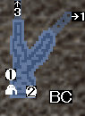
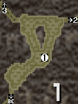
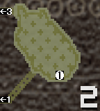
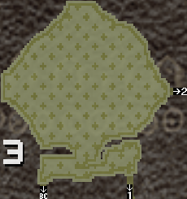

| 지역 | 장소 | 회수 | 온난기 | 한랭기 | 번식기 | ||||
|---|---|---|---|---|---|---|---|---|---|
 | 1 | ∞ | 대포알 | 100% | 대포알 | 100% | 대포알 | 100% | |
| 2 | 6-12회 | 발리스타탄 | 100% | 발리스타탄 | 100% | 발리스타탄 | 100% | ||
| [낙－함정○폭○뇌－]  | 1 | 4-6회 | 대포알 | 100% | 대포알 | 100% | 대포알 | 100% | |
| [낙－함정○폭○뇌－]  | 1 | 4-8회 | 지급용 큰술통폭탄 | 38% | 지급용 큰술통폭탄 | 38% | 지급용 큰술통폭탄 | 38% | |
| 로켓 술통 폭탄 | 21% | 로켓 술통 폭탄 | 21% | 로켓 술통 폭탄 | 21% | ||||
| 작은 술통 폭탄 | 26% | 작은 술통 폭탄 | 26% | 작은 술통 폭탄 | 26% | ||||
| 큰 술통 폭탄 | 10% | 큰 술통 폭탄 | 10% | 큰 술통 폭탄 | 10% | ||||
| 숫돌 | 5% | 숫돌 | 5% | 숫돌 | 5% | ||||
| [낙－함정○폭○뇌－]  | 0 | ||||||||